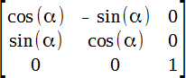

transform

Трансформирует элемент, в частности, позволяет его масштабировать, вращать, сдвигать, наклонять, а также комбинировать виды трансформаций, перечисляя функции трансформации через пробел.
Функций трансформаций довольно много и они делятся по следующим группам: поворот, масштабирование, наклон и сдвиг, а также на двумерные и трёхмерные трансформации. Последние обозначаются добавлением 3d к имени функции. Кроме того, с помощью этих трансформаций можно делать отражение элемента, задавая отрицательные значения параметров у некоторых функций. Все функции комбинируются между собой, позволяя тем самым получить множество новых фигур.
Любая трансформация происходит относительно центральной точки элемента, её положение можно задать с помощью свойства transform-origin.
Координатные оси: оси X и Y находятся в плоскости экрана, а ось Z ему перпендикулярна.
Разные браузеры поддерживают разные префиксы:
.block{
-webkit-transform-style: preserve-3d;
-moz-transform-style: preserve-3d;
transform-style: preserve-3d;
-webkit-transform: translateY(100px);
-moz-transform: translateY(100px);
-ms-transform: translateY(100px);
-o-transform: translateY(100px);
transform: translateY(100px);
}
.block{
-webkit-transform-origin: 100% 0;
-moz-transform-origin: 100% 0;
-ms-transform-origin: 100% 0;
-o-transform-origin: 100% 0;
transform-origin: 100% 0;
}
.block:hover{transform:rotateZ(-20deg); transition:all 1s;}
пример
Устанавливает координаты точки, относительно которой будет происходить трансформация элемента. Отсчёт координат ведётся от левого верхнего угла элемента, по умолчанию точка трансформации находится в его центре. При использовании процентов они берутся от размеров элемента.
transform-origin: <x> <y> <z>
| <x> |
- координата по оси X. (<размер> | <проценты> | left | center | right) |
| <y> |
- координата по оси Y. (<размер> | <проценты> | top | center | bottom) |
| <z> |
координата по оси Z. (только <размер>, без процентов) |
Определяет, как дочерние элементы будут отображаться в 3D-пространстве. Это свойство должно использоваться совместно с transform. Значение по умолчанию flat; применяется к трансформируемым элементам.
transform-style: flat | preserve-3d
Свойство transform-style со значением preserve-3d задает новую систему координат для дочерних элементов. Это значит, что любые дочерние элементы с position:fixed будут привязываться НЕ к окну браузера, а к родителю с transform-style:preserve-3d!
- flatдочерние элементы лежат в плоскости экрана.
- preserve-3dдочерние элементы будут отображаться в 3D-пространстве.
Можно трансформировать элементы различными способами, одним или сразу несколькими:
- поворачивать их относительно оси (одной или нескольких)
- изменять размер - масштабировать
- искажать элемент на заданный угол (например: из квадарата сделать ромб)
- добавлять дополнительный эффект 3D - перспективу
rotate()
Поворачивает элемент в двумерном пространстве на заданный угол относительно точки трансформации, задаваемой свойством transform-origin.
Положительное значение поворачивает элемент по часовой стрелке, а отрицательное - поворачивает элемент против часовой стрелки. По умолчанию точкой поворота является центр элемента.
- rotateX() поворачивает элемент на заданный угол относительно оси X.
- rotateY() поворачивает элемент на заданный угол относительно оси Y.
- rotateZ() поворачивает элемент на заданный угол относительно оси Z.
- rotate3d поворачивает элемент в трёхмерном пространстве.
transform: rotateX(180deg);
|
transform: rotateY(180deg);
|
transform: rotateZ(5deg);
|
 |
|
|
scale()
Использование значения scale в свойстве transform позволяет изменить визуальный размер элемента. Значение масштаба по умолчанию равно 1, поэтому любое значение от 0.99 до 0.01 визуально уменьшает элемент, в то время как любое значение больше или равное 1.01 визуально его увеличивает.
Можно масштабировать только высоту или ширину элемента, используя значения scaleX и scaleY. Значение scaleX будет масштабировать ширину элемента, в то время как значение scaleY будет масштабировать его высоту. Для масштабирования высоты и ширины элемента, но с разными размерами, могут быть одновременно установлены значения по оси х и у. Для этого используя декларацию scale, задав сперва значение по оси x, затем через запятую значение по оси y.
- scaleX() масштабирует элемент по горизонтали.
- scaleY() масштабирует элемент по вертикали.
- scaleZ() масштабирует элемент по оси Z.
- scale3d масштабирует элемент в трёхмерном пространстве [scale3d(sx, sy, sz)].
transform: scaleX(.7);
|
transform: scaleY(.7);
|
transform: scale(.7);
|
|
|
|
Частные случаи трансформации:
- transform: scale(-1, 1) - отражение по горизонтали;
- transform: scale(1, -1) - отражение по вертикали;
- transform: scale(-1, -1) или scale(-1) - отражение по Г и В;
- transform: scaleX(-1) - отражение по горизонтали;
- transform: scaleY(-1) - отражение по вертикали;
- transform: scaleX(-1) scaleY(-1) - одновременное отражение по Г и В.
При использовании scaleZ для трёхмерных преобразованиях элементы могут масштабироваться по оси z. Это не очень интересно, когда никаких других трёхмерных преобразований нет, так как нечего, в частности, и масштабировать. В демонстрации ниже масштаб элементов увеличивается и уменьшается по оси z, при этом добавляется значение rotateX, чтобы увидеть поведение scaleZ. При удалении rotateX элементы будут выглядеть не изменёнными.
scaleZ(2) scaleZ(.5)
skew()
Используется для искажения элементов по горизонтальной оси, вертикальной оси или двум осям сразу. Синтаксис очень похож на значения scale и translate. Применение значения skewX деформирует элемент по горизонтальной оси, в то время как значение skewY деформирует элемент по вертикальной оси. Чтобы исказить элемент по двум осям, используется значение skew, сперва задаётся значение по оси х, затем через запятую значение по оси у.
Значение skew измеряется в градусах. Единицы длины, такие как пиксели или проценты, здесь не применимы.
- skewX() наклоняет элемент на заданный угол по горизонтали.
- skewY() наклоняет элемент на заданный угол по вертикали.
- skew() наклоняет элемент на заданный угол по двум осям.
transform: skewX(-10deg);
|
transform: skewY(5deg);
|
transform: skew(-10deg,5deg);
|
|
|
|
translate()
Значение translate работает несколько похоже на относительное позиционирование, толкает и тянет элемент в разных направлениях, не прерывая обычного потока документа. Использование значения translateX изменит положение элемента по горизонтальной оси, значение translateY изменит положение элемента по вертикальной оси.
Как и со значением scale, чтобы одновременно установить значения по осям х и y, воспользуйтесь значением translate и сперва укажите значение по оси х, затем через запятую значение по оси y.
Значения расстояния, используемые внутри translate, могут быть любыми основными единицами длины, наиболее часто применяются пиксели или проценты. Положительные значения толкают элемент вниз и вправо от позиции по умолчанию, а отрицательные значения тянут элемент вверх и влево.
- translateX() cдвигает элемент по горизонтали на указанное значение.
- translateY() cдвигает элемент по вертикали на указанное значение.
- translateZ() cдвигает элемент по оси Z на указанное значение.
- translate3d cдвигает элемент на заданное значение в пространстве 3D.
Элементы могут также передвигаться по оси z с помощью значения translateZ. Отрицательное значение будет толкать элемент дальше по оси z, что приводит к уменьшению элемента. Положительное значение будет тянуть элемент ближе по оси z, что приводит к увеличению элемента.
transform: translateX(20px);
|
transform: translateY(10px);
|
transform: translate(-20px,10px);
|
|
|
|
Задаёт координаты точки, куда смотрит наблюдатель. Это свойство работает совместно со свойством perspective и определяет точку сходимости линий при перспективе.
Как и в случае установки transform-origin можно задать и perspective-origin. Те же значения, используемые для свойства transform-origin, могут быть использованы в свойстве perspective-origin и оказывают такое же влияние на элемент. Но есть большая разница между этими двумя подходами — точка трансформации определяет координаты, используемые для расчёта изменения трансформации, тогда как начало перспективы определяет координаты точки схода преобразования.
perspective-origin нужно задавать к родителю элемента, как и глубину перспективы.
<style>
.box {
perspective-origin:0 0;
perspective:300px;
}
img {
transform:rotateX(20deg);
}
</style>
<div class="box">
<img src="img/winnie.png">
</div>
perspective-origin:0 0;
|
perspective-origin:50% 0;
|
perspective-origin:100% 0;
|
|
|
|
Чтобы трёхмерные преобразования работали, элементы нуждаются в перспективе, относительно которой происходит трансформация. Перспектива для каждого элемента может быть представлена как точка схождения, подобно тому, что можно увидеть в трёхмерных чертежах.
Перспектива для элемента может быть задана двумя разными способами. Один из них включает в себя использование значения perspective в свойстве transform для отдельных элементов, а другой включает в себя использование свойства perspective для родительского элемента, внутри которого трансформируются дочерние элементы.
Использование значения perspective в свойстве transform прекрасно работает для преобразования одного элемента относительно единичной уникальной перспективы. Если вы желаете преобразовать группу элементов с одинаковой перспективой или точкой схода, то применяйте свойство perspective для их родительского элемента.
div {
transform: perspective(none | длина);
perspective: none | длина;
}
В качестве значения перспективы может быть задано none или длина. Значение none отключает любую перспективу, в то время как значение длины установит глубину перспективы. Чем выше значение, тем дальше вид перспективы, создавая тем самым перспективу довольно низкой интенсивности и небольшое трёхмерное изменение. Низкое значение приближает вид перспективы, тем самым создавая перспективу высокой интенсивности и большое трёхмерное изменение.
perspective:200px;
|
perspective:800px;
|
perspective:2000px;
|
|
|
|
IE10 не поддерживает параметр preserve-3d для создания 3D слоев.
При работе с трёхмерными преобразованиями, элементы время от времени трансформируются таким образом, что их поверхность отворачивается от экрана. Это может быть вызвано установкой значения rotateY(180deg), к примеру. По умолчанию эти элементы показываются с обратной стороны. Так что если вы не желаете видеть эти элементы вообще, установите свойство backface-visibility как hidden, и вы спрячете элемент всякий раз, когда он отворачивается от экрана.
Другим значением для backface-visibility является значение по умолчанию visible, оно всегда показывая элемент, независимо от того, в каком направлении он смотрит.
Свойство backface-visibility имеет более важное значение при использовании анимации. Так при повороте одна картинка может заменяться на другую, заранее развернутую на 180 градусов.
Для корректной работы необходимо также задать свойство?
transform-style:preserve-3d;
.box {
-webkit-backface-visibility: hidden;
-moz-backface-visibility: hidden;
backface-visibility: hidden;
transform-style: preserve-3d;
transform: rotateY(180deg);
}
404 ой
HTML
<style>
.bv1 {
perspective:500px;
transform-style:preserve-3d;
position:relative;
}
.bv1:hover{
transform:rotateY(180deg);
}
.bv1 img {
width:180px;
position:absolute;
backface-visibility:hidden;
}
.bv1 div {
transform:rotateY(180deg);
backface-visibility:hidden;
}
</style>
<div class="bv1">
<img src="img/winnie.png">
<div>404 ой</div>
</div>
Свернуть
Любые позиционированные элементы на веб-странице могут накладываться друг на друга в определенном порядке, имитируя тем самым третье измерение, перпендикулярное экрану. Каждый элемент может находиться как ниже, так и выше других объектов веб-страницы, их размещением по z-оси и управляет z-index.
Это свойство работает только для элементов, у которых значение position задано как absolute, fixed или relative. Значение по умолчанию auto, не наследуется, анимируется.
z-index: <число> | auto
| <число> |
В качестве значения используются целые числа (положительные, отрицательные и ноль). Чем больше значение, тем выше находится элемент по сравнению с теми элементами, у которых оно меньше. При равном значении z-index, на переднем плане находится тот элемент, который в коде HTML описан ниже. |
| auto |
порядок элементов строится автоматически, исходя из их положения в коде HTML и принадлежности к родителю, поскольку дочерние элементы имеют тот же номер, что их родительский элемент. |
- Список, созданный с помощью <select>, в браузере Internet Explorer до версии 6.0 включительно всегда отображается поверх других элементов, несмотря на значение z-index.
- Internet Explorer до версии 7.0 включительно интерпретирует auto как 0.
Это нестандартное свойство, вместо него используйте transform.
Изменяет масштаб объекта согласно заданному значению.
zoom: <число> | <проценты> | normal
| <число> |
Число с плавающей запятой, значение 1.0 соответствует normal. Значения больше 1.0 увеличивают масштаб объекта, значения меньше 1.0 уменьшают масштаб. |
| <проценты> |
Целое число, заданное в процентах. Указывает изменение масштаба относительно 100%, которое соответствует значению normal. |
| normal |
Значение по умолчанию. Объект имеет исходный масштаб. |
Матрица преобразований предназначена для вычисления новых координат элемента с целью его трансформации и позволяет установить множество преобразований одновременно. Различают двумерную и трёхмерную матрицу, они отличаются друг от друга размером и пространством, на которое ориентированы.
Двумерная матрица
Преобразование с помощью двумерной матрицы происходит в плоскости экрана, при этом соблюдается условие, что линии всегда остаются параллельными, поэтому в качестве трансформации допустимы поворот, масштабирование, наклон и изменение положения, но никак не перспектива или нечто подобное. Это уже область работы трёхмерной матрицы.
Сама матрица имеет размер 3х3 и в общем виде записывается так:

Для матрицы преобразований применяется функция matrix(), внутри скобок перечисляются коэффициенты.
transform: matrix(a, b, c, d, tx, ty);
| a |
| Изменение масштаба по горизонтали. Значение больше 1 расширяет элемент, меньше 1, наоборот, сжимает.
Для отражение элемента по горизонтали следует установить a = -1.
aналог scaleX() |
| b |
| Наклон по вертикали. Положительное значение наклоняет вверх, отрицательное вниз.
аналог skewY() |
| c |
| Наклон по горизонтали. Положительное значение наклоняет влево, отрицательное вправо.
аналог skewX() |
| d |
| Изменение масштаба по вертикали. Значение больше 1 расширяет элемент, меньше 1 - сжимает. Для отражение элемента по вертикали следует установить d = -1.
аналог scaleY() |
| tx |
| Смещение по горизонтали в пикселях. Положительное значение сдвигает элемент вправо на заданное число пикселей, отрицательное значение сдвигает влево.
аналог translateX() |
| ty |
| Смещение по вертикали в пикселях. При положительном значении элемент опускается на заданное число пикселей вниз или вверх при отрицательном значении.
аналог translateY() |
| - |
| значение по умолчанию:
transform: matrix(1, 0, 0, 1, 0, 0); |
| - |
| transform: matrix(1.2, 0, 0, 1, 0, 10); |
| - |
| transform: matrix(1, .5, 0, 1, 10, 0); |
| - |
| transform: matrix(.8, 0.5, 0.5, .8, 0, 0); |
Поворот
Поворот является комбинацией масштабирования и наклона, но чтобы сохранить исходные пропорции элемента преобразования должны подчиняться строгим вычислениям с использование синусов и косинусов.

Сам поворот происходит по часовой стрелке, α задаёт угол поворота в градусах.
Трёхмерная матрица (matrix3d)
Название «трёхмерная» лишь отражает тот факт, что матрица предназначена для работы в 3d-пространстве. Трёхмерная матрица имеет размер 4х4 и применяется для преобразования координат элемента в трёхмерном пространстве. В общем виде она выглядит так:

a1 b1 c1 d1 a2 b2 c2 d2 a3 b3 c3 d3 - describing the linear transformation.
a4 b4 c4 d4 - describing the translation to apply.
.item {
transform: matrix3d(a1, b1, c1, d1, a2, b2, c2, d2, a3, b3, c3, d3, a4, b4, c4, d4);
}
/* или */
.item {
transform:matrix3d(
a1, b1, c1, d1,
a2, b2, c2, d2,
a3, b3, c3, d3,
a4, b4, c4, d4
);
}
В чистом виде эта матрица применяется редко из-за своей сложности и наличия удобных функций для трансформации в пространстве. Если вам интересна тригонометрия и формулы преобразований одних координат в другие, то почитайте этот материал.
https://developer.mozilla.org/en-US/docs/Web/CSS/transform-function